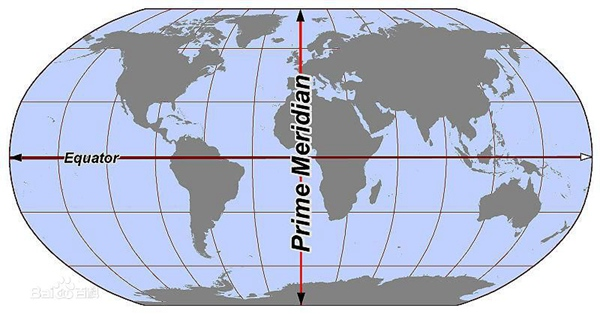

台风和飓风有什么区别？实际是一码事。台风和飓风都属于北半球的热带气旋，只不过是因为它们产生在不同的海域，被不同国家的人用了不同的称谓而已。
在北半球，国际日期变更线以东到格林威治子午线的海洋洋面上生成的气旋称之为飓风，而在国际日期变更线以西的海洋上生成的热带气旋称之为台风。一般来说，在大西洋上生成的热带气旋，被称作飓风，而把在太平洋上生成的热带气旋称作台风。

左边海域生成的叫飓风，右边叫台风。